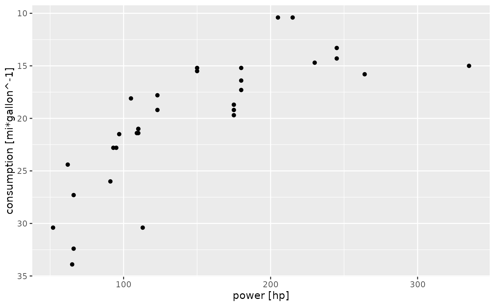

These are the default scales for the units class. These will usually
be added automatically. To override manually, use scale_*_units.
Arguments
- ...
arguments passed on to
continuous_scale(e.g. scale transformations via thetransargument; see examples).- guide
A function used to create a guide or its name. See
guides()for more information.- position
For position scales, The position of the axis.
leftorrightfor y axes,toporbottomfor x axes.- sec.axis
sec_axis()is used to specify a secondary axis.- unit
A unit specification to use for the axis. If given, the values will be converted to this unit before plotting. An error will be thrown if the specified unit is incompatible with the unit of the data.
Examples
if (requireNamespace("ggplot2", quietly=TRUE)) {
library(ggplot2)
mtcars$consumption <- set_units(mtcars$mpg, mi / gallon)
mtcars$power <- set_units(mtcars$hp, hp)
# Use units encoded into the data
ggplot(mtcars) +
geom_point(aes(power, consumption))
# Convert units on the fly during plotting
ggplot(mtcars) +
geom_point(aes(power, consumption)) +
scale_x_units(unit = "W") +
scale_y_units(unit = "km/l")
# Resolve units when transforming data
ggplot(mtcars) +
geom_point(aes(power, 1 / consumption))
# Reverse the y axis
ggplot(mtcars) +
geom_point(aes(power, consumption)) +
scale_y_units(trans="reverse")
}
#> Warning: The `scale_name` argument of `continuous_scale()` is deprecated as of ggplot2
#> 3.5.0.
